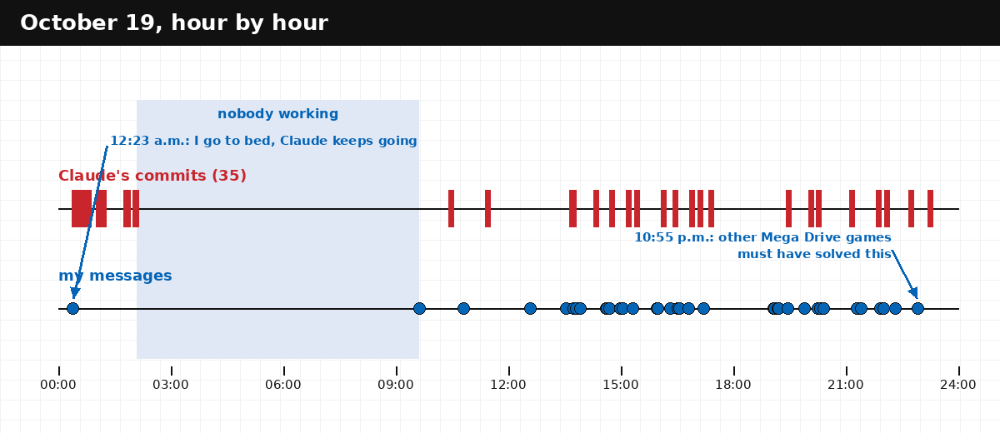
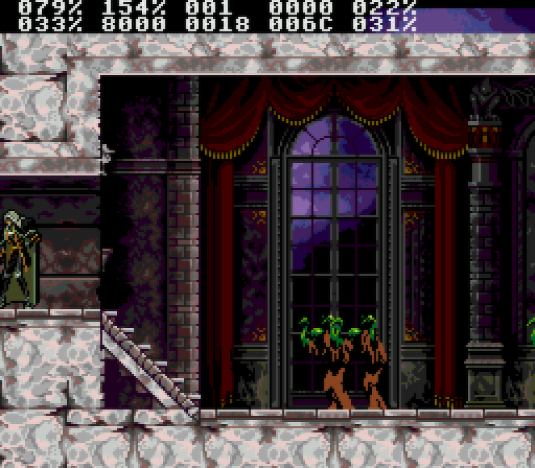
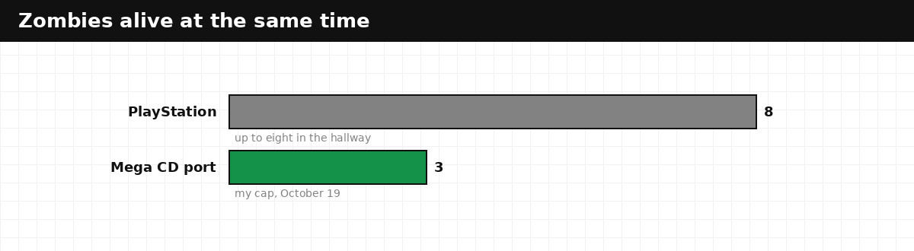
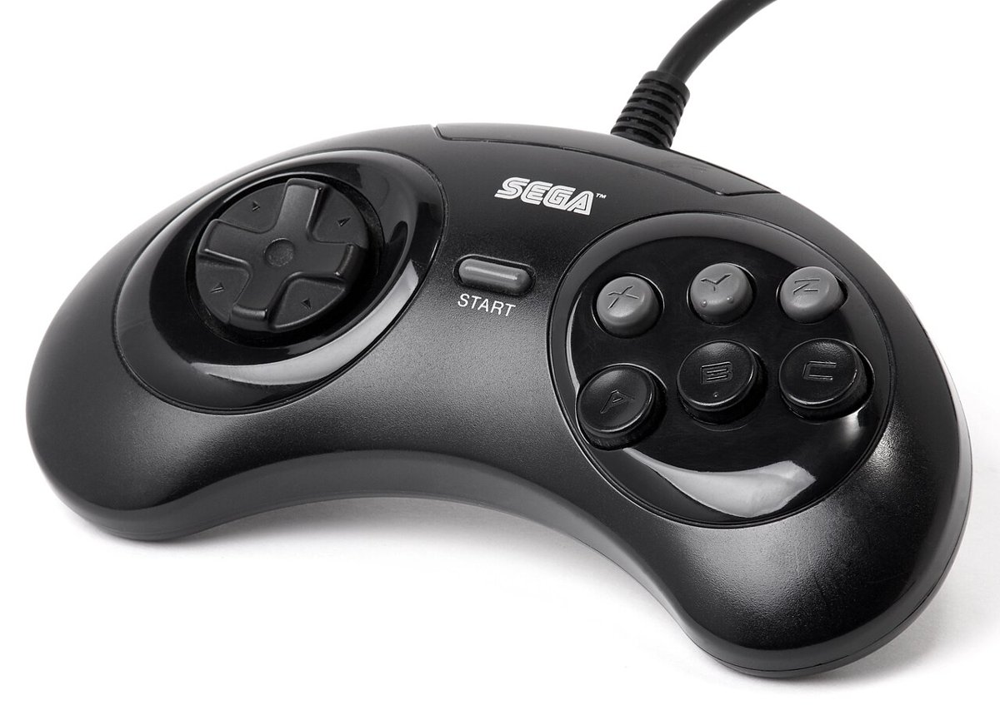
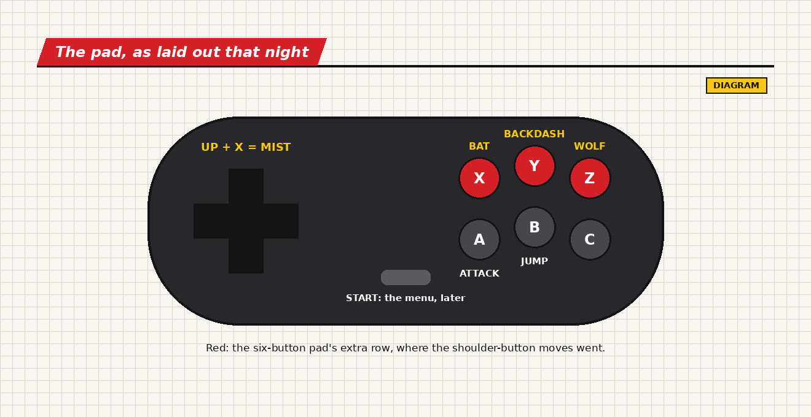
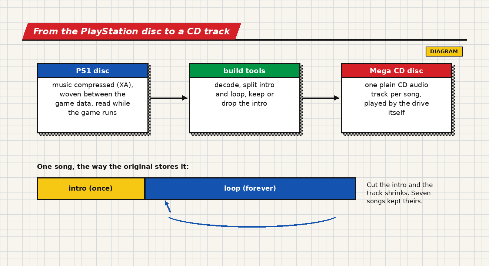
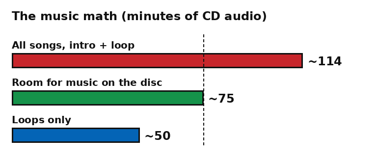
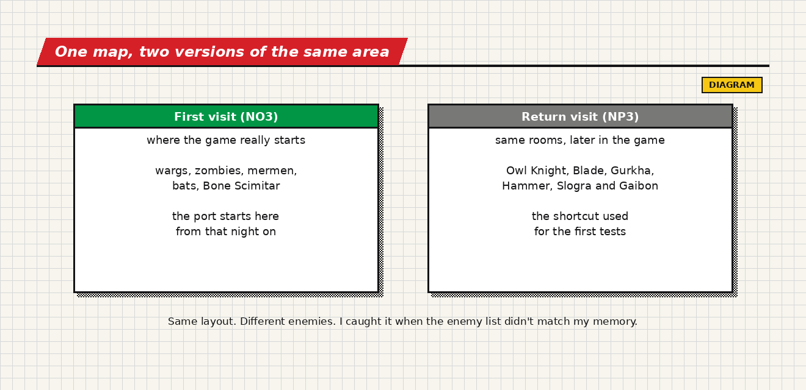
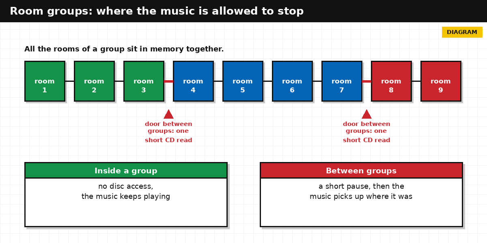
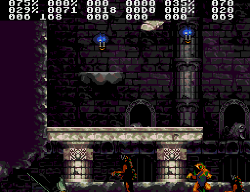

the night shift and the music math
Draft: not published yet
Day 2 started at 12:23 a.m., when I went to bed and asked Claude to keep working for as many hours as it could. By morning there was a new build waiting, and I sent back the review: I couldn't find the candle, nothing blinked, the zombies died without any animation, and the backdash was unacceptably slow. While I was at it, I moved the backdash from Start to Y on the six-button pad. Start is going to be the menu.

October 19 in one picture. I went to bed at 12:23 a.m.; Claude kept committing until 2:05, and nobody touched anything until I woke up.
An hour later the build was much smoother and the death animations worked. It also crashed twice and sometimes forgot to draw the scenery, but that's what mornings are for.

The hallway as it really looked that day, rebuilt from the October 19 code. Colors straight from the PlayStation with no palette work at all, zombies piling up, and the debug readout across the top.
Zombies without end
The Castle Entrance hallway spawns zombies forever, and after a while sprites started disappearing. The PlayStation keeps up to eight of them alive at once. The Mega Drive can only draw 16 sprites on any line of the screen, and the hallway is one long line of zombies.
 On the yellow line, Alucard plus eight zombies need more sprites than the Mega Drive will draw on one line. The ones at the end simply vanish. An illustration, not a screenshot. I picked the cap myself: three. Nobody has complained.

Eight on the PlayStation, three here.
While testing that, I also noticed Alucard was being knocked back too hard by zombie contact. In the original, the size of the recoil depends on how much damage he takes. Noted.
3 forms, 6 buttons
The PlayStation controller has shoulder buttons for the transformations. The Mega Drive pad doesn't, so I laid them out myself: X for the bat, Z for the wolf, up plus X for the mist. That evening only the bat had graphics; the wolf and the mist worked, invisibly. The double jump felt perfect on the first try.

The six-button pad: X is the bat, Z is the wolf, up plus X is the mist, Y is the backdash. Photo: Evan-Amos, public domain, via Wikimedia Commons.


The layout from that night, drawn as a diagram.
The music math
The PlayStation streams its music from the disc in a format the Mega CD can't play, so every song gets converted into a regular CD audio track during the build. On the original disc, each song is two pieces: an intro that plays once and a loop that repeats. Claude did the math: all the songs, intro plus loop, come to about 114 minutes. A CD has room for about 75, after the game data.

What the build does to every song. The intro is the part that's easy to cut.

The music math. The dashed line is what fits on the disc.
Claude's recommendation was a middle ground: keep the intros on the important songs, cut the long and forgettable ones, swap a few songs that barely play. I went further and cut every intro. Half an hour later I asked for some of them back, because Marble Gallery, Dracula's Castle and Dance of Pales have short intros that are worth keeping. By the end of the night the list had seven songs. We ended up roughly where Claude had started, by a different road.
The day I was right
Twice, actually. Three times, if you count the one that took a while to pay off.
Claude listed the enemies it was porting next, and I pointed out that none of them show up the first time you walk into the castle. The port had been using the Castle Entrance from the return visit, a deliberate shortcut for the first test. From that night on, the game starts in the real first visit.

The same rooms exist twice in the game files. The port had picked the wrong one.
Then the area graphics didn't fit in memory with the music playing nonstop. Claude's plan was a cache of rooms. I suggested grouping them instead, so the music would only stop at a few chosen doors. The groups are what the port still uses.

Room groups, simplified. The real Castle Entrance has more rooms and several groups.
The third one came at 10:55 p.m., with the mermen room crawling. I wrote that there must be known tricks for this, that the Mega Drive scene before AI was full of brilliant solutions, and that every problem we hit probably had a game that had already solved it. That sentence became the method of this whole project. More on that soon.

The mermen room in the build from that evening, rebuilt from the 10:44 p.m. code. The readout at the top includes the processor load, and here it sits between 100% and 120%: past 100%, the game no longer fits in a frame. On my emulator it crawled. The fireballs and splashes are all there; the speed wasn't.
And somewhere in the afternoon, after Claude handed me a terminal command, I replied: "Oh, I don't plan on doing that. I'm vibe coding, and I'm zero programmer." (Translated from Portuguese.) Claude promised no more terminal commands.
The number
35 commits. Three zombies on screen instead of eight.
Tomorrow: a merman rewritten for the 68000, and water made out of a palette trick.
I decide what the port should be, draw and pick colors, and test every build. The code, tools and measurements are written by Claude (Anthropic's AI). This post was drafted by Claude from my chat messages and the project's commit history, and reviewed by me.